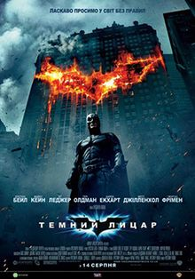

Хрещений батько/The Godfather(1972)
Головна сторінка
Фільми
Мультфільми
Оцінка на IMDb :
9.2/10
Ваша оцінка :
Режисер:
Френсіс Форд Коппола
Сценарист:
Маріо П'юзо, Френсіс Форд Коппола
Короткий опис:
Старіючий патріарх династії організованої злочинності в післявоєнному Нью-Йорку передає контроль над своєю таємною імперією своєму неохоче молодшому синові.
1.Втеча з Шоушенка
3.Темний лицар

 1.Втеча з Шоушенка
1.Втеча з Шоушенка